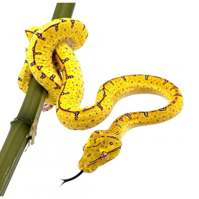
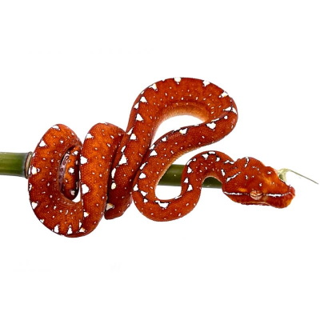
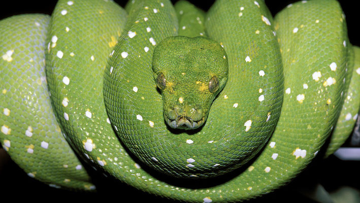

©2022 Reptilfacts tous droits réservés. Complètement libre
Le changement ontogénique est un processus durant lequel
un animal change de mode de vie, d'alimentation ou encore de couleur !
Et c'est sur ce dernier point que nous allons nous intéresser, avec le
cas du python vert ou morelia viridis, un serpent d'Indonésie qui a la
particularité d'avoir des bébés couleurs jaune voire rouge. Ces spécimens
vont ensuite perdre ces couleurs et peu à peu gagner du majoritairement du vert,
certains peuvent même avoir des parties bleues et blanches (cela dépend des localités).


Photo prise sur le site «Reptilis»
Voici donc deux photo de morelia viridis juvénile(enfant)
Photo retrouvée sur le site «Animalia Presse» dans un article dédié
Ci-dessus voici à quoi ressemble un serpent adulte de cette espèce
Pourquoi je vous parles de ça ?
Pourquoi si loin dans les pages ?
Je trouve ce phénomène incroyable, ça serait comme se dire que nos chiens ou chats
passe du noir au roux en grandissant. Mais surtout, pour moi je pense que le morelia
viridis est l'une des plus d'espèces de serpents existants.
Mon avis :
Comme dit plus haut, c'est une espèce très belle et qui est sans doute ma préférée
surtout quand on sait que certains éleveurs font des mix de localités de cette espèce
pour obtenir des serpents comme ceci :
Image de gauche : photo prise sur le site «Phoeniexreptiles.net» Image de droite : photo reprise du «Dreamstime.com»
Ces spécimens en particulier qu'on ne peut retrouver en nature sont extrêmement chères
et proviennent en général d'éleveur aux Etats-Unis.
Le problème avec cette espèce, c'est qu'elle nécessite d'avoir un matien minutieux et régulier
de cette espèce, de plus ce n'est pas une espèce très active, elle reste la plupart du temps
percher sur sa branche.
La parthénogenèse c'est lorsqu'un individu donne naissance à un enfant
sans qu'il y ait recours à un acte sexuel. Dans le monde des reptiles, certaines
espèces de lézards tels que les geckos en sont capables. Les lézards qui naissent sont
"des clones" d'eux même en quelque sorte.
Pourquoi je vous parles de ça ?
Je trouve ça hallucinant de se dire que des animaux sont capables
de se reproduire sans être dépendant d'un autre individu.
De plus, je pense que de personne sont au courant que ce genre
de phénomène était possible.
Photo prise sur le site «Bebesaurus» dédiée à ce lézard
photo d'un gecko géant de Nouvelle-Calédonie